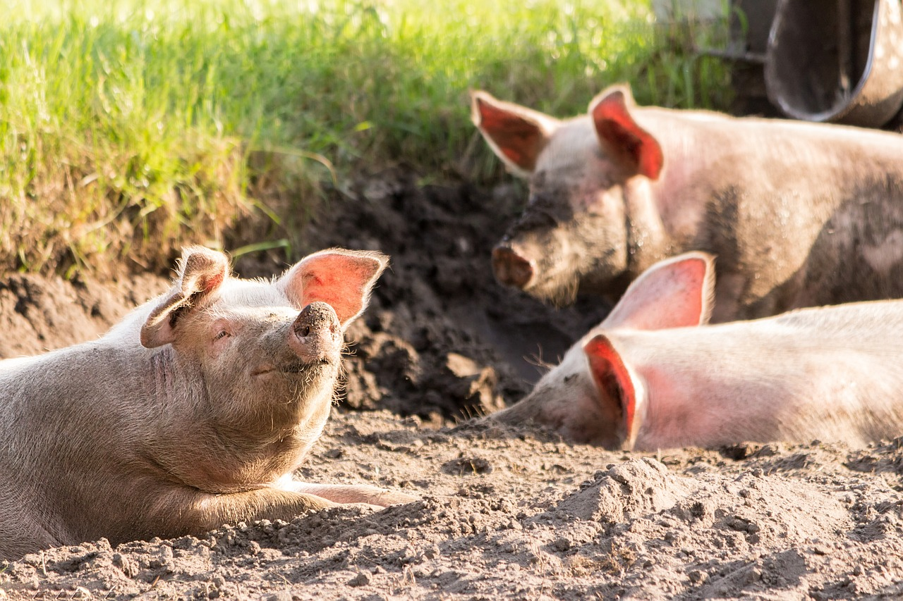

Read The Three Little Pigs in Italian — a classic tale of cleverness and perseverance. Every paragraph comes with a full English translation.
Use the buttons below to have the full story read aloud in Italian. Each paragraph will highlight as it is spoken.
C'era una voltaOnce upon a time una scrofa con tre porcellini. Li amava moltissimo, ma non c'era abbastanza cibo per tutti, quindi lì mandò per il mondo a cercar fortunaseek their fortunes.

Il primo porcellino decise di andare a sud. Mentre camminava lungo la strada, incontrò un contadino che trasportava un fascio di pagliaa bundle of straw, così chiese educatamentepolitely all'uomo: "Per favore, può darmi quella paglia, così posso costruire una casa?"
Poiché il porcellino aveva detto "per favore", il contadino gli diede la paglia e il porcellino la usò per costruire una casa bellissima. La casa aveva muri di paglia, un pavimento di pagliastraw floor e dentro... un comodocomfortable letto di paglia.
Proprio quando il porcellino finì di costruire la casa e si stava sdraiando sul letto di paglia per un riposinoa nap, un grosso lupo cattivo giunse davanti alla casa. Sentì l'odore del porcellino nella casa e gli venne l'acquolina in boccahis mouth watered (lit. "the little water in the mouth"). "Mmmm... panini con pancetta!"
Così il lupo bussò alla porta della casa di paglia e disse: "Porcellino! Porcellino! Fammi entrare! Fammi entrare!"
Ma il porcellino vide le grosse zampepaws / claws del lupo attraverso il buco della serraturakeyhole, perciò rispose: "No! No! No! Vattene! Vattene!"
Allora il lupo digrignò i dentibared his teeth e disse: "Allora soffierò e soffierò fino a spazzar via la tua casa."
Così soffiò e soffiò e tirò giù la casabrought the house down, e il porcellino ritornò a casa della madre.
Il secondo porcellino decise di andare a nord. Mentre camminava lungo la strada, incontrò un contadino che trasportava un fascio di legnaa bundle of wood, così chiese educatamente all'uomo: "Mi scusiExcuse me, potrei avere quella legna per costruire una casa?"
Poiché il porcellino aveva detto "mi scusi", il contadino gli diede la legna e il porcellino la usò per costruire una casa bellissima. La casa aveva muri di legno, un pavimento di legno e dentro... un solidosturdy / solid tavolo di legno.
Proprio quando il porcellino finì di costruire la casa e stava sistemando i fioriwas arranging flowers sul solido tavolo di legno, il grosso lupo cattivo giunse davanti alla casa. Sentì l'odore del porcellino nella casa e il suo stomaco cominciò a borbottarestomach started to rumble. "Mmmmm... maiale arrosto!"
Così il lupo bussò alla porta della casa di legno e disse: "Porcellino! Porcellino! Fammi entrare! Fammi entrare!"
Ma il porcellino vide il naso lungolong nose del lupo attraverso il buco della serratura, così rispose: "No! No! No! Vattene! Vattene!"
Allora il lupo digrignò i denti e disse: "Allora soffierò e soffierò fino a spazzar via la tua casa."
Così soffiò e soffiò e tirò giù la casa, e il porcellino ritornò a casa della madre, che non ne fu felice!
Il terzo porcellino decise di andare a ovest. Mentre camminava lungo la strada, incontrò un contadino con un carico di mattonia load of bricks, così chiese educatamente all'uomo: "Buongiorno signore, potrei avere qualcuno di quei mattoni per costruire una casa?"
Al contadino piacque esser chiamato "signore" quindi diede alcuni mattoni al porcellino e il porcellino li usò per costruire una casa bellissima. La casa aveva muri di mattoni, un pavimento di mattoni e dentro... un grosso camino di mattonibrick fireplace.
Proprio quando il porcellino finì di costruire la casa e stava cucinando un pentolone di zuppaa big pot of soup nel suo camino di mattoni, il grosso lupo cattivo giunse davanti alla casa. Sentì l'odore del porcellino nella casa e si leccò le labbralicked his lips. "Mmmmm... maiale tritato con salsa barbecue e fagiolini!"
Così il lupo bussò alla porta della casa di mattoni e disse: "Porcellino! Porcellino! Fammi entrare! Fammi entrare!"
Ma il porcellino vide le grosse orecchieears del lupo dal buco della serratura, così rispose: "No! No! No! Vattene! Vattene!"
Allora il lupo digrignò i denti e disse: "Allora soffierò e soffierò fino a spazzar via la tua casa."
Così soffiò e soffiò. E soffiò e soffiò. Ma non riuscì a tirare giù la casa. Alla fine era così a corto di fiatoout of breath che non riuscì a soffiare più.
Il porcellino mescolavawas stirring semplicemente nel suo pentolone di zuppa e rideva.
Ma il lupo aveva così voglia di maiale tritato... non avrebbe rinunciatogiven up! StrisciòHe snuck around sul retro della casa e si arrampicò sul tettoclimbed onto the roof. "Ora prenderò quel porcellino di sicuro!"
Il lupo scivolòslid down lungo il grosso camino di mattoni e atterrò... PLOP!... col fondoschiena nel pentolone di zuppa del porcellino... ora la zuppa era bollente! Il lupo ululòhowled e saltò fuori dalla pentola, poi fuggì dalla casa, giù lungo la strada, stringendosi il fondoschiena bruciatoclutching his burnt bottom.
Il porcellino chiamò la madre e i due fratellini col suo cellularemobile phone di mattoni e li invitòinvited them a una deliziosa cena con zuppa al fondoschiena di lupo.
La zuppa al fondoschiena di lupo era così deliziosadelicious / tasty che ben presto tutti nel raggio di cento miglia volevano prenderecatch un lupo e farlo accomodare nella loro zuppa. Il povero lupo dovette fuggireflee molto lontano nella foresta profonda e scuradeep dark forest dove riuscì a vivere in pace e tranquillitàin peace and quiet.
Copyright © 2026 Lingua Bud